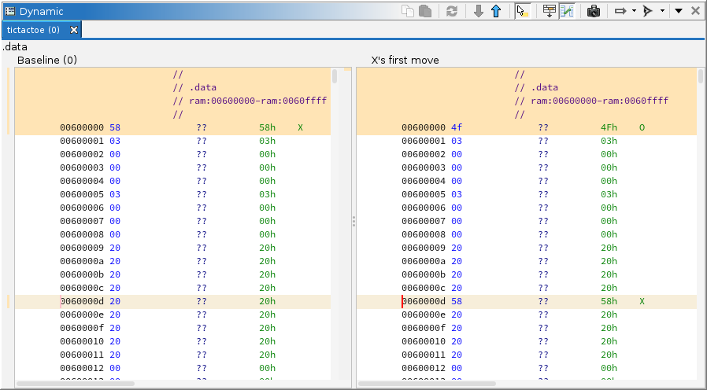

|  |
A common strategy in dynamic analysis is to compare machine state between two points in time. To this end, to support comparison of bytes in memory, the "trace diff" plugin extends the Dynamic Listing to provide side-by-side comparison of two different points in time. When active, listings for both points in time are displayed and the byte value differences between them are highlighted. NOTE: This does not compare annotations. It only compares raw byte values. Additionally, all stale values are ignored, i.e., to show as a difference, the memory must be observed at both points in time, and the values must differ.
NOTE: This plugin only facilitates the comparison of memory displayed in listings. To compare registers or SLEIGH expressions, use the respective windows: Registers and Watches. By navigating back and forth between two points in time, using the Time Window, the differences are displayed in red.
The plugin adds actions to the main Dynamic Listing. When active, additional actions are present.
This action is available whenever a trace is active in the main listing. It prompts for an alternative point in time:
|
The snapshot table is exactly the same as that in the Time Window. In most cases, simply selecting a snapshot suffices.
Perhaps the most common use of this action is to identify where a given variable is stored in memory. The trace saves a record of observed memory from the debugging session. Comparing snapshots thus identifies changes over time; however, there is no guarantee that the desired variable was ever observed. Assuming the general vicinity of the variable is known, e.g., "somewhere in the .data section," the Read Selected Memory action can ensure its value is recorded. Of course, it can also read "all memory," but that operation and the follow-on comparison could take time. In general, the procedure to locate a variable is to capture a baseline, execute the target until the variable has changed, capture again, then compare:
Assuming the variable is actually contained in the captured memory ranges, then it should be among the differences shown. If too many differences appear, repeat the experiment. Consider executing less code, establishing a new baseline, taking the intersection of the results, etc. Remember, the variable's storage should encode its value.
Optionally, the specified time may also include emulation. See the Go To Time action for the syntax of the Time Schedule expression. For simple schedules, the step buttons provide convenient forward and backward changes to the emulation schedule. Perhaps the most common use of this is to see what changes from executing an isolated block of code. Ideally, the baseline is a relatively complete capture or represents the present in a live session, so that the emulator does not depend on un-recorded state:
Alternatively, if the number of steps to reach the end of the block is already known, just use the emulation expression in the Compare action's dialog. NOTE: When used this way, the baseline snapshot will be in the left pane, and the emulated snapshot in the right, which is opposite the result from the steps above.
In either case, this will highlight any memory that was modified by the emulated code. Of course, this could also be accomplished by setting a second breakpoint and allowing the target to execute; however, emulation does not necessarily require large memory captures. It only observes what it needs, and its internal state contains everything that changed. Furthermore, if establishing the baseline is difficult, emulation allows the target to remain at that baseline. Assuming sufficient state is captured, emulation can also be performed offline, without a live target.
These actions are only present when the comparison listing is visible. Each is available when there exists a previous or next range from the main listing's cursor. Clicking the action navigates to the nearest address in that range.